ART
i'm gonna have to make this look more neater and add more images but i'm too lazy rn D:
stuff here is roughly sorted by how old it is. newest stuff is at the top.
SS13: Colonial Marines
HUNTERS
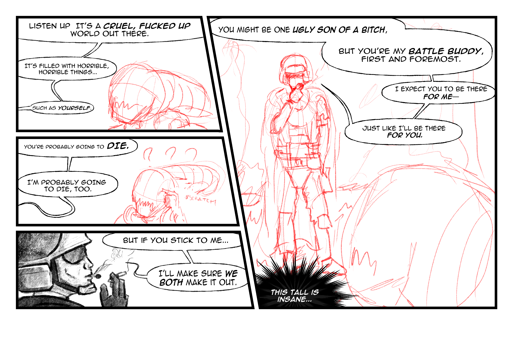 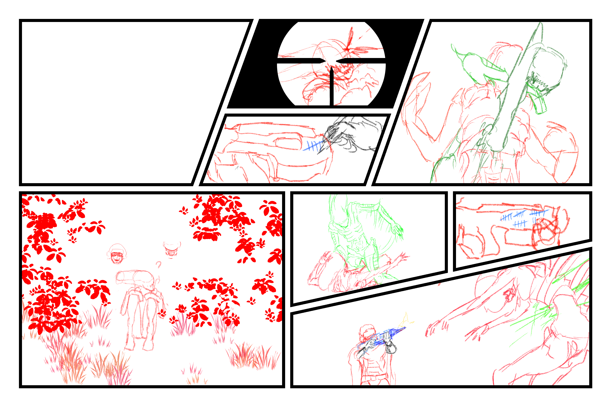
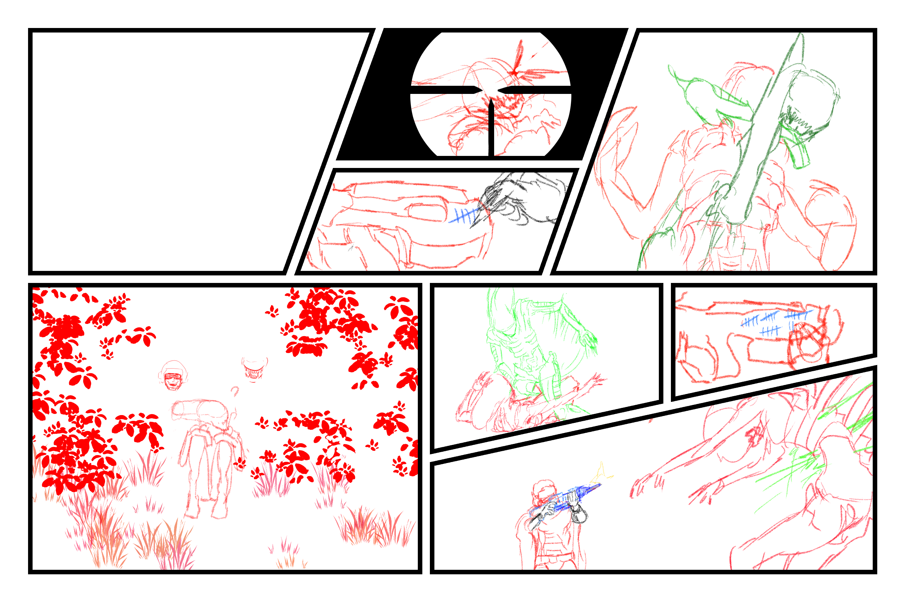

a capable battle buddy is worth a lot in this economy.
an unfinished comic i'm working off, based on A GOOD MOTHER. it'll get finished... eventually.
A GOOD MOTHER

it is what it is...
i did lot of drawings involving corrupted xenos (greenos). i just like aliums. this one took a bit to make but i was still getting a hang of drawing with a graphic tablet at this point.
GYSGT. STEVE MURPHY
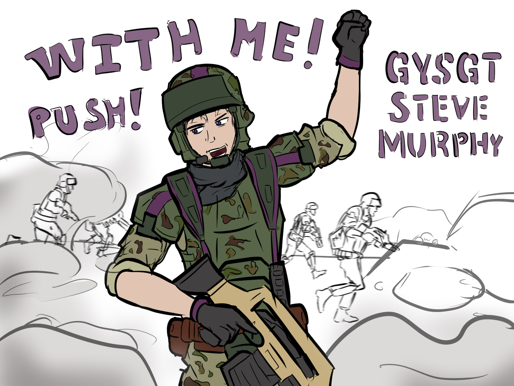PUSH WITH ME!
a very fast drawing (2 hours) i did for one of my friends. i did it right after i got my graphics tablet, and i was pretty amazed at how fast i could work with it compard with a mouse.
murphy is the boss.
CRASH
DCC is finally useful!
the first thing i drew with my graphic tablet when i got it. it was a friend's request. video showcases one of their projects, a vtol aircraft. pretty cool shit even though i only got to interact with it once. my internet is pretty bad these days so i can't play much of the game, sadly.
XORPSMAN
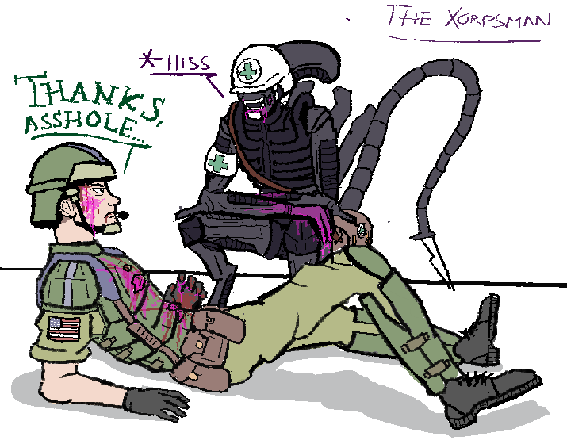the goo heals, trust.
another paint.net mouse drawing. not much to say about it, it was mainly just for fun.
AFTERPARTY
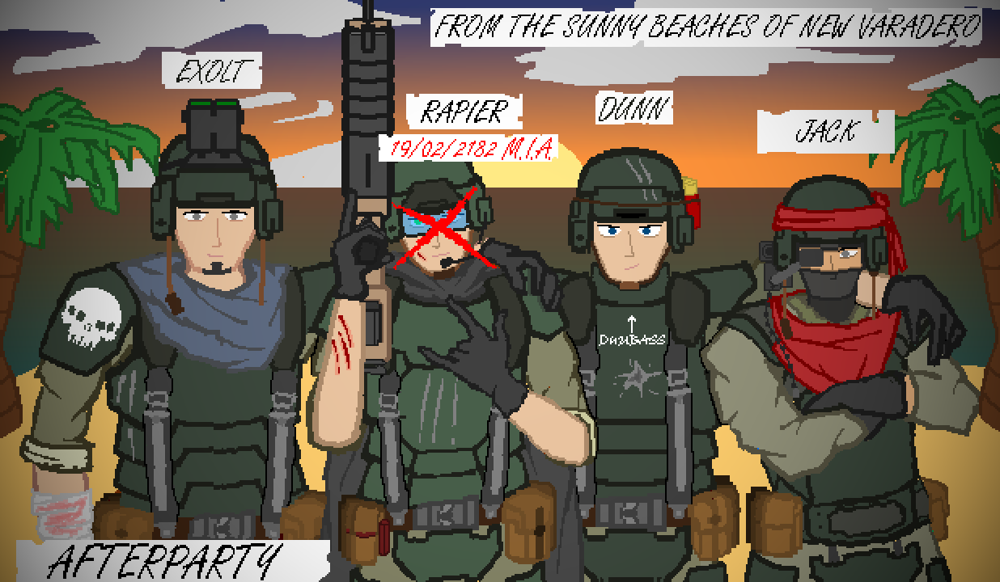current tally: 2 MIA.
an old drawing i did with a mouse in paint.net composed of me and my friends. the big cross on rapier? he wasn't MIA, guy got permabanned lol
exolt though, he's MIA. poor sod
POST-OP WOES WITH GREENOS
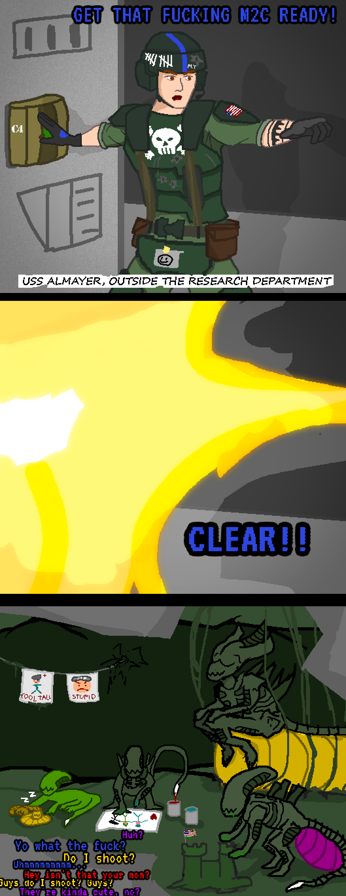sorry?
an even older paint.net drawing, which took way too much time for how rough it looks. still, people found it pretty funny and weirdly enough it's my best recieved scribble on the server.
CLUELESS CAP
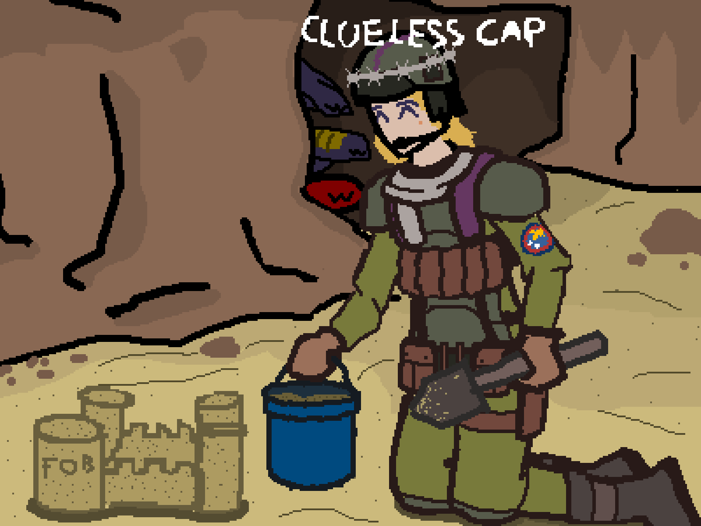Polly!
might be the 2nd or 3rd drawing i made, and it's of another friend from CM. i don't know what happened to them, they pretty much cut off contact with everyone i know, AFAIK. hopefully they're doing alright.
Hotline Miami
DEAD MEAT
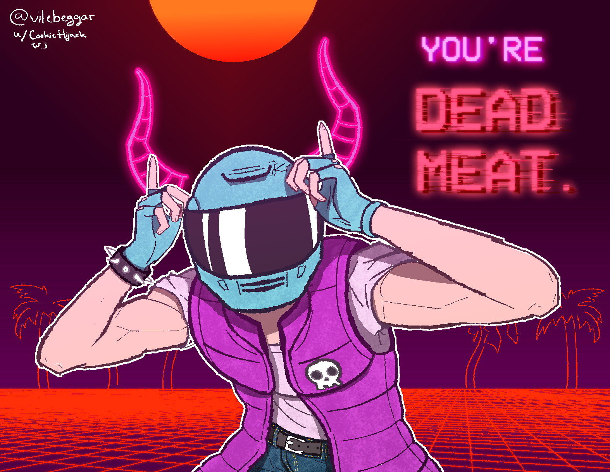NO MORE GAMES.
my last doodle with a mouse. this and the jacket picture were done in drawpile with a custom brush made by my friend, can't sleep. this is why the drawing actually looks decent. it's actually one of the hardest pics i ever made. i liked it enough to make it my pfp :D
DO YOU LIKE HURTING PEOPLE?
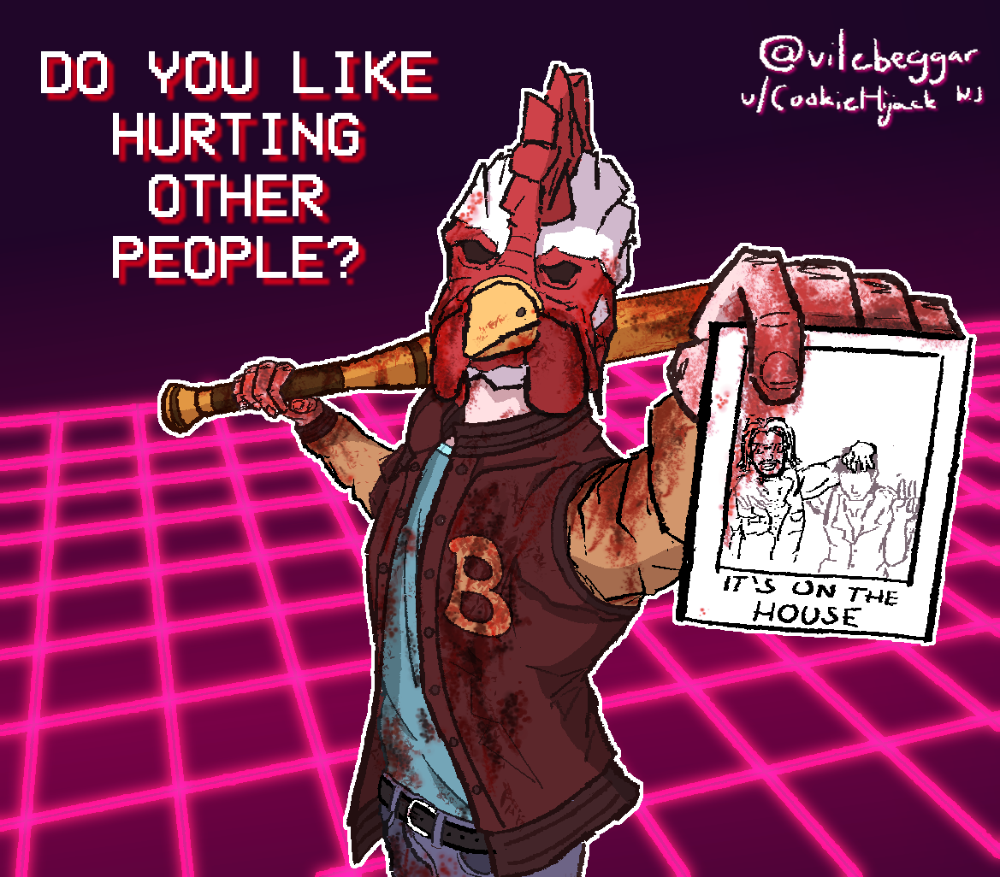YES, I DO.
i was in a really potent hotline miami phase for a short while in early 2025. i played it multiple times when i was younger, but i never really "got into" it properly. but somewhere around february, i replayed both of the games, and i enjoyed the everloving crap out of them.
i have to thank the game, since it really hit me with a ton of inspiration at once, and the pics i made for the game were pretty decent looking for something drawn with a mouse by a complete amatuer.
XCOM
NOT YOUR ENEMY
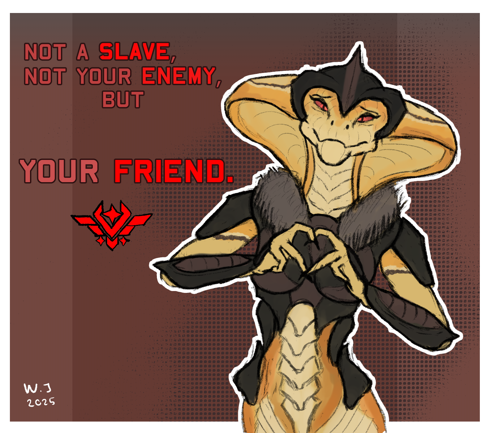yay for snakes.
i really like xcom. i also really like reptiles/scalie stuff. i always wanted to get good at drawing them. this is based off another drawing i made which actually sucks so much i'm not even gonna bother uploading it here, but i really like how this one turned out. and it was done in record pace, just in 2 hours. always use references. thumbs up :D